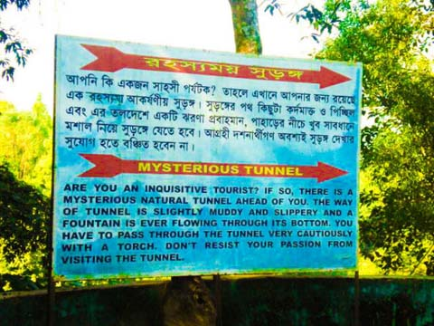
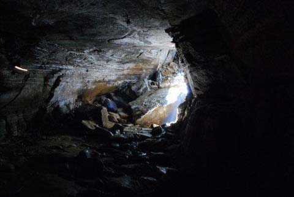

মাটিরাঙ্গা থেকে ১১ কিলোমিটার জেলা শহর পথে। অথবা জেলা শহর থেকে মাত্র আট কিলোমিটার পশ্চিমে আলুটিলার অবস্থান


অপরূপ বাংলার নৈসর্গিক সৌন্দর্যের লীলা ভূমি পার্বত্য খাগড়াখড়ি জেলা। এ নৈস্বর্গিক সৌন্দর্য্যে ভরপুর পর্যটন সম্ভাবনাময় ও পাহাড়ের রাণী খ্যাত পার্বত্য খাগড়াছড়ি জেলার পর্যটন স্পট আলুটিলা। পাহাড়বাসীর কাছে যেমনি পরিচিত তেমনি দেশী-বিদেশী পর্যটকদের কাছে শতবছরের বটমূল ও আলুটিলা পর্যটনকেন্দ্র, রহস্যময় গুহার কারণে ‘আলুটিলা’ খুবই পরিচিতি।
খাগড়াছড়ি শহর হতে প্রায় ৮ কিলোমিটার পশ্চিমে মাটিরাঙ্গা উপজেলার আলুটিলা পযর্টন কেন্দ্রে রয়েছে একটি রহস্যময় গুহা। স্থানীয়রা একে বলে মাতাই হাকড় বা দেবতার গুহা। তবে আলুটিলা পর্যটন কেন্দ্রে অবস্থিত বলে পর্যটকরা একে আলুটিলা গুহা বলেই চিনি। এটি খাগড়াছড়ির একটি নামকরা পর্যটন কেন্দ্র। এটি একটি চমৎকার পিকনিক স্পট। তাই সারা বছরই এখানে ভীড় লেগে থাকে। এখানকার প্রাকৃতিক সৌন্দর্য অতুলনীয়, যা হৃদয় ছুয়ে যায়। আলুটিলা খাগড়াছড়ি জেলার সব চাইতে উচু পর্বত।
নামে এটি টিলা হলেও মূলত এটি একটি পর্বতশ্রেণি। আলুটিলার পূর্বের নাম ছিল আরবারী পর্বত। এর সর্বোচ্চ উচ্চতা সমুদ্র সমতল হতে প্রায় ৩০০০ ফুট। আকাশ, পাহাড় আর মেঘের মিতালী এখানে মায়াবী আবহ তৈরি করে।
আলুটিলা রহস্যময় সুগঙ্গে যেতে হলে প্রথমেই আপনাকে পর্যটন কেন্দ্রের টিকেট কেঁটে ভিতরে প্রবেশ করতে হবে। ফটকের দুই পাশে দুটি শতবর্ষী বটবৃক্ষ আছে যা আপনাকে স্বাগত জানাবে। গুহার ভিতর সূর্যের আলো যেতে পারেনা তাই যাবার পূবে অবশ্যই মশাল নিয়ে যেতে হবে।
এই সুউচ্চ পর্বতের সর্পিল আকারে আঁকা বাঁকা রাস্তার দু’ধারে সবুজ বনাঞ্চল সারি সারি উঁচু নিচু পাহাড় আর লুকিয়ে থাকা মেঘ আপনার মনকে চুরি করবে। রাস্তা দিয়ে মিনিট খানে হাঁটলেই চোখে পড়বে একটি সরু পাহাড়িপথ। পাহাড়ের ঢাল বেয়ে নীচে নেমে গেছ এই পথটি। এই পথটি বেয়ে নিচে নামলেই চোখে পড়বে একটি ছোট ঝর্না।
ঝর্নার পানি নেমে যাচ্ছে নিচের দিকে ঝিরি বরাবর। তবে এখানে পাহাড়ী লোকজন ঝর্নার পানি আটকে রাখার জন্য একটি বাঁধ দিয়েছে। তারা এই পানি খাবার ও অন্যান্য কাজে ব্যবহার করে।
পাকা রাস্তা শেষ হলে আপনাকে সিঁড়ি বেয়ে নিচে নামতে হবে। প্রায় ৩৫০টি সিঁড়ি বেয়ে নিচে নামলে পরে পাওয়া যাবে কাঙ্খিত সেই আলুটিলা গুহা। আলুটিলা গুহাতে যাবার জন্য আগে পাহাড়ের ঢাল বেয়ে নামতে হতো গুহামুখে।
কিন্তু এখন বাংলাদেশ পর্যটন করপোরেশন একটি পাকা রাস্তা করে দিয়েছে। যার ফলে খুব সহজেই হেঁটে যাওয়া যায় গুহা মুখে। এটি একেবারেই পাথুরে গুহা, তাই খুব সাবধানে পা ফেলে সামনে এগুতে হয়। কারণ সুরঙ্গের ভিতরে কোন আলো নেই। সুরঙ্গের তলদেশ পিচ্ছিল এবং পাথুরে। এর তলদেশে একটি ঝর্না প্রবাহমান। তাই খুব সাবধানে মশাল বা আলো নিয়ে গুহা পাড়ি দিতে হবে।
পা ফসকে গেলেই আহত হতে হবে। তবে অন্য কোন ভয় নেই। গুহাটি একেবারেই নিরাপদ। আলুটিলার এই মাতাই হাকড় বা দেবতার গুহা সত্যিই প্রকৃতির একটি আশ্চর্য খেয়াল। দেখতে অনেকটা ভূগর্ভস্থ টানেলের মত যার দৈর্ঘ প্রায় ৩৫০ ফুট। গুহার ভীতরে জায়গায় জায়গায় পানি জমে আছে, রয়েছে বড় বড় পাথর। গুহাটির এপাশ দিয়ে ঢুকে ওপাশ দিয়ে বের হতে সময় লাগবে প্রায় ১৫ মিনিট।
বাংলাদেশ পর্যটন করপোরেশনের খাগড়াছড়ি মোটেল এ থাকতে পারেন। এ জন্য আপনাকে অবশ্যই বুকিং দিতে হবে। প্রযোজনীয় ফোন নম্বর: ০৩৭১-৬২০৮৪, ০৩৭১-৬২০৮৫ (সরাসরি) এবং ঢাকা অফিসঃ +৮৮০-২-৯৮৯৩৭১০